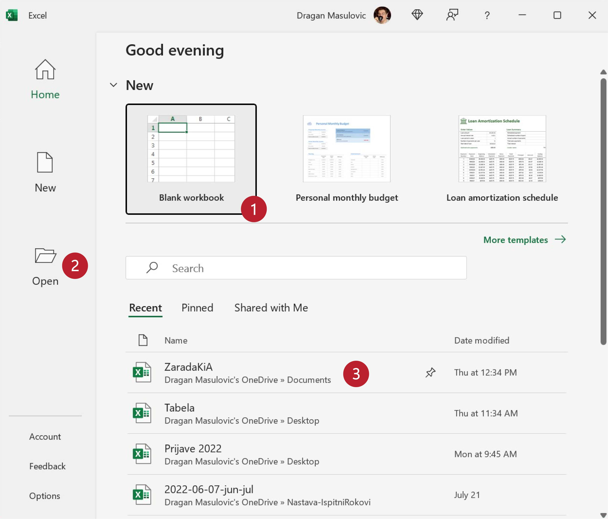
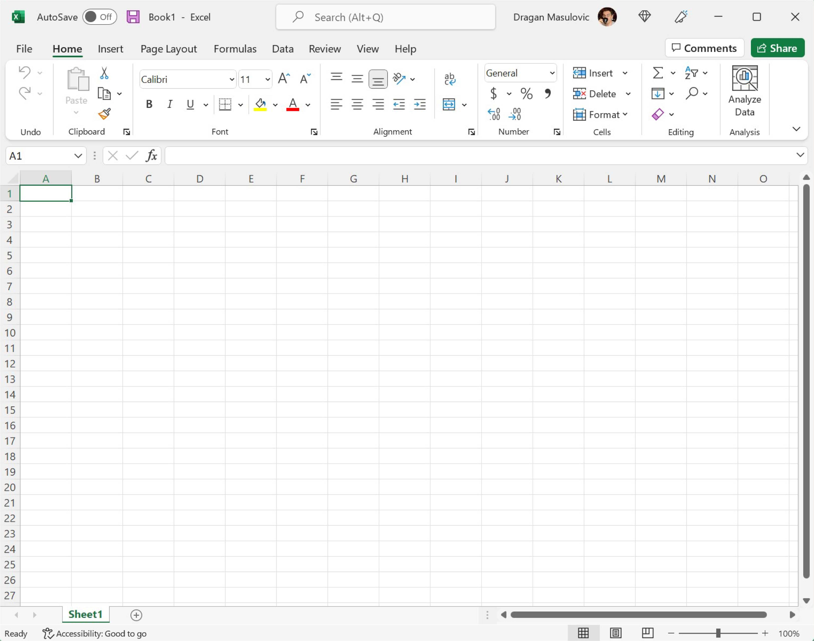
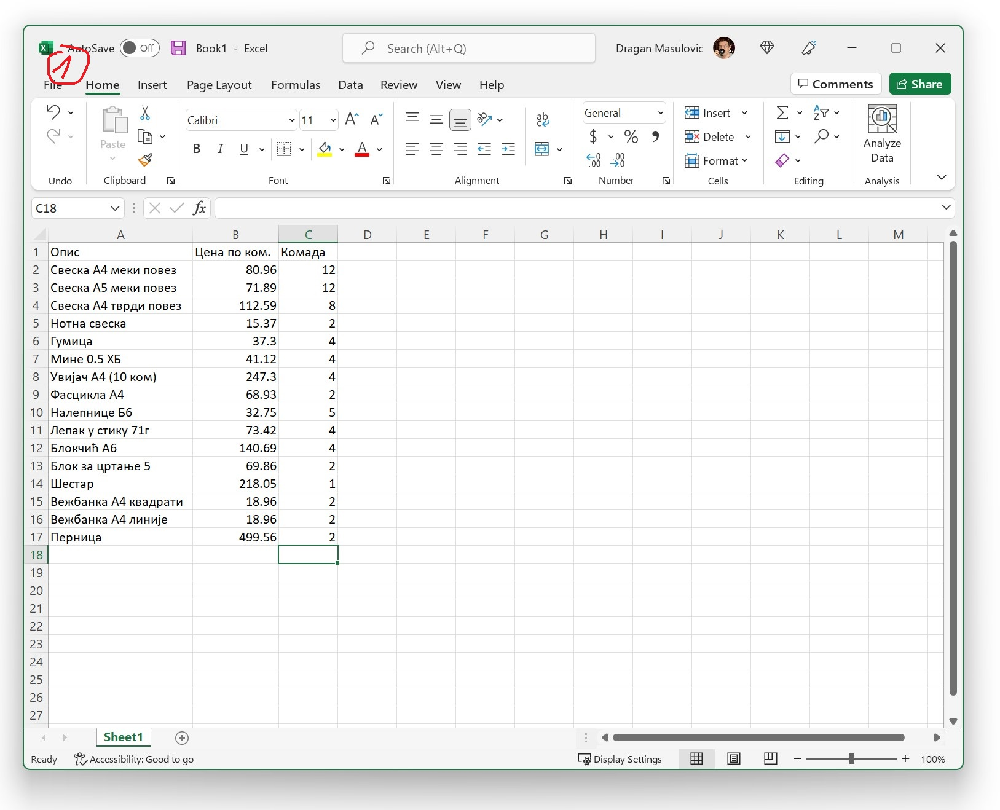
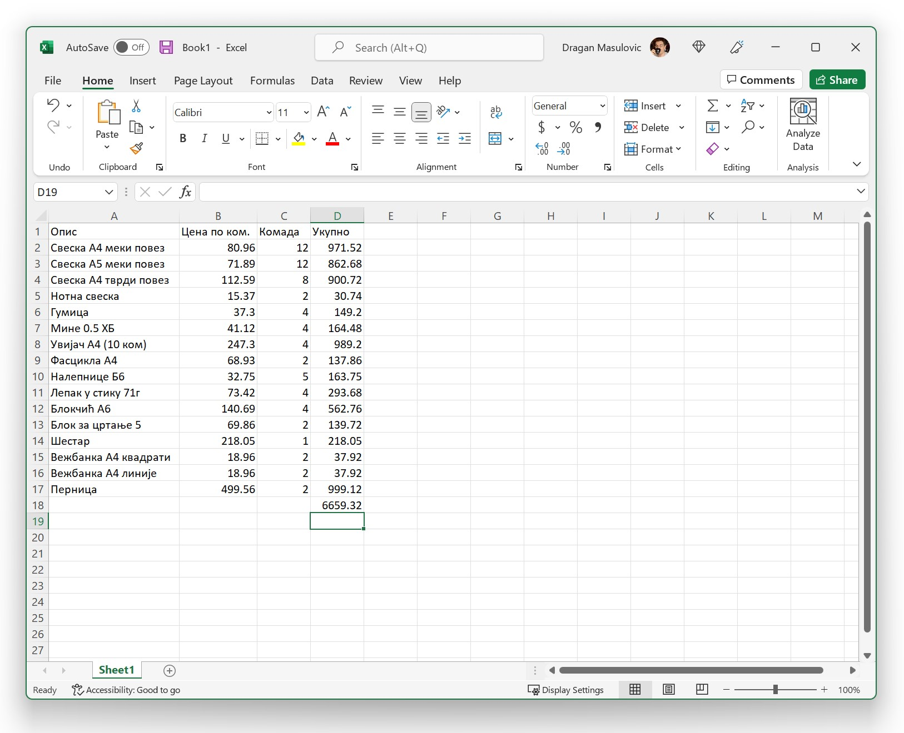

Увод у рад са програмима за табеларна израчунавања¶
На овом часу ћемо причати о:
Значају обраде података у савременом друштву, и
Екселу као алату за обраду табеларно приказаних података (како покренути Ексел, како унети податке у табелу и како снимити табелу).
Подаци и информације¶
Доношење важних одлука се мора ослањати на анализу података. Модерно друштво је тако организовано да смо све чешће у прилици да морамо да доносимо важне одлуке, што значи да смо све чешће у прилици да морамо да анализирамо податке. Анализа података постаје незаобилазан елемент чак и на личном нивоу.
Пример 1. Да ли узети кредит са нижом каматном стопом и дужим периодом отплате, или обрнуто?
Пример 2. За брзе и краће позајмице новца од банке, да ли је боље определити се за кредитну картицу или за дозвољени минус?
Пример 3. Да ли је боље узети стамбени кредит који је индексиран у еврима, динарима или швајцарским францима?
Ниједан од ових проблема се не може решити „у глави”, без озбиљне анализе услова који су везани за сваку опцију, и озбиљне анализе очекиваних прилива средстава у породицу. Дакле, без озбиљне анализе података.
Податке добијамо посматрањем, прикупљањем, анкетирањем,… Анализом података долазимо до информације:

Податак може бити неки број, неколико бројева, или пакет бројева представљен у облику табеле.
Обрада података се своди на рачунање статистика као што су минимум, максимум, збир, просек, медијана, али и на преуређивање и одабир релевантних података из почетне групе како би се лакше уочиле законистости (сортирање и филтрирање).
Информација коју добијамо обрадом података може бити представљена у облику једног броја (просек оцена), табеле (списак свих такмичара који су се квалификовали за наредни степен такмичења), или графикона (промена температуре током године).
Пример.¶
Једна породица је куповала прибор за почетак нове школске године. Ево списка ствари које су купили:
Опис |
Цена по ком. |
Комада |
|---|---|---|
Свеска А4 меки повез |
80,96 |
12 |
Свеска А5 меки повез |
71,89 |
12 |
Свеска А4 тврди повез |
112,59 |
8 |
Нотна свеска |
15,37 |
2 |
Гумица |
37,30 |
4 |
Мине 0.5 ХБ |
41,12 |
4 |
Увијач А4 (10 ком) |
247,30 |
4 |
Фасцикла А4 |
68,93 |
2 |
Налепнице Б6 |
32,75 |
5 |
Лепак у стику 71г |
73,42 |
4 |
Блокчић А6 |
140,69 |
4 |
Блок за цртање 5 |
69,86 |
2 |
Шестар |
218,05 |
1 |
Вежбанка А4 квадрати |
18,96 |
2 |
Вежбанка А4 линије |
18,96 |
6 |
Ператоница |
499,56 |
2 |
Колико је коштао прибор? Израчунајте уз помоћ калкулатора, па проверите рачун са учеником до себе.
Сада ћемо показати како овај (и много сложенији рачуни!) могу да се аутоматизују!
Покретање Ексела¶
Мајкрософтов Ексел (Microsoft Excel) представља један од најраспрострањенијих софтверских производа за обраду табеларно представљених података. Ексел своју популарност дугује томе што је табела у коју се уносе подаци „опипљива”, она је ту, корисник може само да кликне на поље и да унесе податак или формулу.
Да бисмо га покренули, прво морамо да пронађемо Ексел на рачунару. Оперативни систем Windows омогућује да до програма дођемо на разне начине.
Можемо га потражити у списку апликација које су инсталиране на рачунару, или је пречица већ издвојена на Старт менију:

а постоји и могућност да се пречица која води ка програму већ налази на радној површини (десктоп):

Када се покрене, Ексел нам нуди могућност да направимо нови документ, или да учитамо неки од постојећих:
{kind=link}
Ако се одлучимо да кренемо од празног документа (Blank workbook) отвориће се нови празан радни лист:
{kind=link}
Следећи видео илуструје могућности покретања Ексела:

Одмах испод заглавља прозора (тања зелена линија) налази се командна трака (енгл. command ribbon или кратко само ribbon) на којој су сличицама (које се зову иконе или иконице) приказане разне акције које Ексел уме да изврши. О некима од њих ћемо детаљно причати касније.
Навигација и уношење података у табелу¶
Највећи део прозора представља табела чије колоне су означене словима (A, B, C, D, …), а врсте бројевима (1, 2, 3, …). Табела се састоји од „кућица” које зовемо ћелије. Ћелија може да садржи
неки текст (опис),
неки број, или
формулу, што је главна снага Ексела.
Име сваке ћелије се састоји од слова (колоне у којој се налази) и броја (врсте у којој се налази). Дакле, као у шаху!
Ћелија око које се налази зелени оквир се зове активна ћелија. Активна ћелија је ћелија у коју можемо да унесемо неки садржај. Погледајмо кратак видео:
Да бисмо унели неки податак рецимо у ћелију Е12 треба да кликнемо мишем на њу или да се стрелицама „дошетамо” до ње. Онда можемо да унесемо неки текст или број, рецимо овако:

Након уноса податка обавезно треба притиснути тастер [ENTER]:

Следећи видео илуструје унос података у Ексел табелу:
ПАЖЊА! У зависности од тога како су у оперативном систему постављена регионална подешавања (Regional Settings) Ексел приказује бројеве користећи децималну тачку (по англо-саксонском стандарду) или користећи децимални зарез (по централноевропском стандарду кога је усвојила и Србија).
У овом курсу ћемо користити англо-саксонски стандард јер је то стање ствари у програмирању на свим континентима и у свим државама света!
Пример¶
Сада ћемо направити нови празан документ и у њега унети табелу са почетка (куповина школског прибора). Не морате да прекуцавате податке. Уместо тога унесте неке своје податке, али водите рачуна да табела треба да има три колоне које се зову „Опис”, „Цена по ком.” и „Комада” и да мора да има барем 15 редова.
Кренемо од празне табеле:
{kind=link}
Ексел аутоматски додели неку „стандардну” ширину колонама и висину врстама табеле. Ако ништа не променимо унос података ће бити непријатан и табела ће на крају изгледати некако овако:
{kind=link}
Пошто су колоне сувише уске описи се не виде добро. Колоне се могу проширити тако што мишем „ухватите” границу између два слова у заглављу табеле и развучете колону колико вам прија:
{kind=link}
Тако добијамо табелу која је много прегледнија:
{kind=link}
На исти начин се могу проширити и врсте у табели, али то нам у овом примеру није било потребно.
Да нам труд не пропадне треба да снимимо табелу коју смо направили. Кликните на „File”:
{kind=link}
па онда на „Save as” и „This PC”:
{kind=link}
У одговарајуће поље унесите име фајла и кликните на „Save”:
{kind=link}
Погледајмо и кратак видео:
Једноставне формуле¶
Моћ Ексела лежи у томе што у ћелију можемо да упишемо формулу која објашњава како треба да се израчуна вредност ћелије.
Све Ексел формуле почињу знаком = (једнако). Идеја је јасна: „будућа вредност ћелије = формула”.
Формула се у ћелију уноси тако што кликнемо на ћелију и откуцамо „= формула”. Најједноставније формуле изгледају овако:
=(B3+C3)/2
=C7+D7*(D8-12)
Дакле, то су неки математички изрази који описују како се од вредности уписаних у неке друге ћелије рачуна вредност ћелије у којој је формула. Заграде користимо као што смо и навикли, док су симболи операција мало другачији него у математици: множење се означава звездицом, а дељење косом цртом.
Сада ћемо показати како у примеру са школским прибором објаснити Екселу да за нас израчуна колико је новца потрошено. Прво ћемо кликнути на ћелију D1 и у њу уписати „Ukupno”, да се зна шта представљају подаци у тој колони:
{kind=link}
Потом ћемо кликнути на ћелију D2 и у њу унети формулу
=B2*C2
Како уносимо формулу Ексел показује које ћелије учествују у формули:
{kind=link}
Када притиснемо [ENTER] Ексел ће израчунати вредност формуле и уписати одговарајући број у ћелију:
{kind=link}
Важно је да разумемо да Ексел није заборавио формулу! Она је и даље уписана у ћелију, али се приказује вредност формуле јер је то оно што ми као корисници желимо да видимо. Ако сада поново кликнемо на ћелију, формула се јасно види и реду изнад (који се зове formula bar):
{kind=link}
Сада ћемо у ћелију D3 унети формулу
=B3*C3
и тако до краја. Ово је мало досадно и може се убрзати, али о томе касније:
{kind=link}
Ево целог поступка и у облику кратког видеа:
На овај начин је Ексел за нас израчунао колико новца је потрошено на сваку појединачну ставку. Још само да видимо колико новца је укупно потрошено, и задатак је готов.
Сада желимо да у ћелији D18 (Пази! У твом случају то може бити нека друга ћелија!) израчунамо колико је укупно новца потрошено према овој табели. Један начин да то урадимо је да у ћелију унесемо формулу
= D2 + D3 + D4 + D5 + D6 + D7 + D8 + D9 + D10 + D11 + D12 + D13 + D14 + D15 + D16 + D17
али је то неудобно, и приликом уноса можемо направити разне грешке.
Уместо тога, у ћелију ћемо унети следећу формулу:
=SUM(D2:D17)
Ова формула каже Екселу да у ћелију D18 упише збир (SUM) вредности уписаних у ћелије D2, D3,…, D17 (D2:D17), што смо и желели. „SUM” се зове функција, а запис „D2:D17” се зове распон или опсег ћелија.
Приликом уноса формуле Ексел означава ћелије које учествују у рачуну:
{kind=link}
па када притиснемо [ENTER] добијамо:
{kind=link}
Следи кратак видео који илуструје овај поступак:
Задатак готов! Само још једном да снимимо табелу.
Задаци¶
Задатак 1. Направите табелу са списком предмета и оцена које сте добили на крају прошле школске године. Табела треба да има следеће колоне:
Предмет
Оцена
Онда израчунајте просечну оцену. Да се подсетимо – просек бројева се рачуна овако:
Дакле, за рачунање просека можете користити формулу сличну овој:
=(B2+B3+B4+B5+B6+B7+B8+B9)/8
или, још боље, формулу сличну овој:
=AVERAGE(B2:B9)
која аутоматски рачуна просек (енгл. AVERAGE) бројева у ћелијама B2, B3, …, B9 (B2:B9). Водите рачуна о томе да се у вашој табели може радити о другим ћелијама!
Задатак 2. Направите табелу са плеј-листом једног ди-џеја. Табела треба да има следеће колоне:
Аутор
Албум
Нумера
Трајање (у минутима)
Онда израчунајте укупно трајање музике у плеј-листи у минутима.